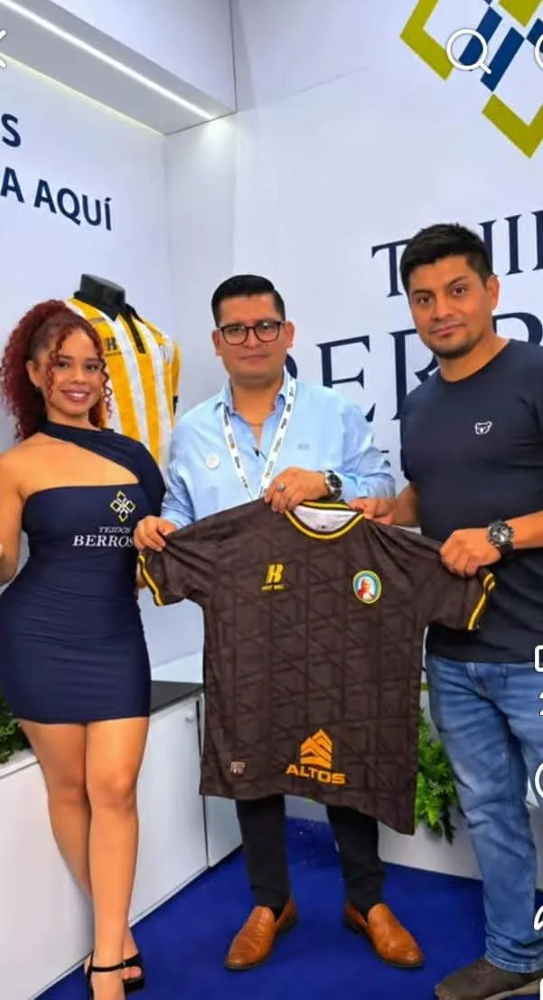
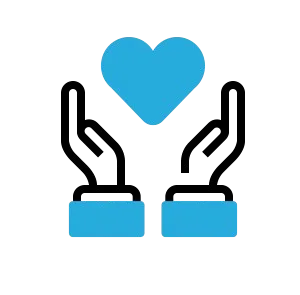

Historia de Hotbeck

Nuestra Historia
HOTBEC nació de un sueño familiar, con la visión de traer el máximo bienestar, la innovación tecnológica y el confort a los pies de cada hogar. Desde sus humildes comienzos, la empresa ha crecido impulsada por la pasión por el desarrollo textil y el compromiso inquebrantable con la salud y la calidad de sus productos. Cada par de medias cuenta una historia, desde la selección delas fibras más finas e hilos con tecnología antibacterial avanzada directamente de los productores, hasta la maestría con la que los especialistas y costureros transforman estos elementos en verdaderas piezas de protección y confort.
Tecnologia Antibacterial
Nuestra tecnologia antibacterial ayuda a prevenir lapoliferacion de bacterias que causa el mal olor, manteniendo tus pies frescos, secos y protegidos durante todo el dia, incluso en jornada de uso intenso.
Maxima Comodidad

Suavidad natural confeccionadas con algodon premium de alta calidad que brinda una sensaion suave al contacto con la piel, favorece la traspiracion y proporciona
Calidad

Ajuste perfecto diseñadas con un ajuste ergonomico que se adapta al pie sin apretar ni deslizarse.Sus costuras reforzadas y materiales resistentes garantizan mayor durabilidad y conford para el uso diario.
Envios a Domicilio
Tu pedido es preparado cuidadosamente para que llegue en excelentes condiciones y en el menor tiempo posible.